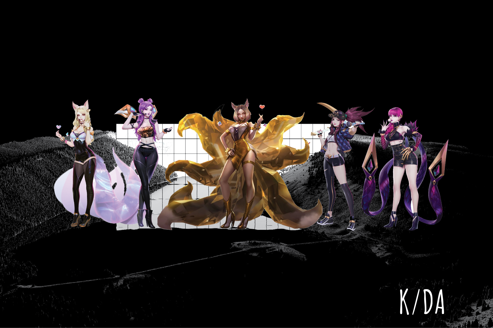

The rise of Covid-19 has forced cultural institutions to explore alternative digital spaces with online exhibitions and a rise in virtual reality

Have you seen a girl with a demon face bandanna all over your social media feeds? Or maybe a fox girl with dyed blonde hair? It’s all part of the world of League of Legends! League of Legends developer Riot Games debuted a new song and video, “Pop/Stars,” at the game’s championship in Incheon, South Korea.
The group, K/DA, is how Riot is promoting League of Legends’ new line of character cosmetics for four champions: Ahri, Akali, Evelynn and Kai’Sa. Each champion was given a special backstory that goes with their skins, as well as a real-life counterpart during the opening ceremony at Worlds. According to the League of Legends website, Ahri and Evelynn are the lead vocalists, Kai’Sa is the main dancer and Akali is the rapper.
Ahri is a nine-tailed fox mage League champion — and is one of the most well known champs in the game. She gets all the flashiest skins and has a ton of fans. Her abilities in-game feature a lot of dashing around, and a charm, which forces enemies to walk toward her, in love. Miyeon of real-world K-pop group (G)I-dle sings her parts in the song.
Kai’Sa is a fairly new champion, who plays as a marksman. In League of Legends lore, she spent most of her life trapped in The Void, a horrific dimension filled with disgusting monsters. She came back a killer, who zooms around, shooting missiles from the cannons that float above her shoulders. She’s represented by Jaira Burns.
Akali, the girl with the neon mask, is the champion everyone has been buzzing about. She’s a ninja who was just redesigned to have better visuals, including a huge dragon tattoo, and now she’s super ripped. In game, she’s an assassin, who weaves in and out of the darkness and throws kunai to one-shot any squishy opponent that might come her way. Soyeon of (G)I-dle sings her parts.
Evelynn is usually a purple demon lady who runs amok in a shadow form, out of sight of enemies, and then pops out of nowhere to assassinate them. Her lore is centered around being a succubus. That being said, her K/DA counterpart is a diva, and her romantic partners tend to go missing. Her real-life counterpart is Madison Beer, an American singer who has 11 million Instagram followers.

Hatsune Miku (初音ミク), codenamed CV01, was the first Japanese VOCALOID to be both developed and distributed by Crypton Future Media, Inc..
She was initially released in August 2007 for the VOCALOID2 engine and was the first member of the Character Vocal Series. She was the seventh VOCALOID overall, as well as the second VOCALOID2 vocal released to be released for the engine. Her voice is provided by the Japanese voice actress Saki Fujita (藤田咲, Fujita Saki).
There have since been numerous installments, such as additional voice libraries dubbed 'Append', as well as an upgrade for the VOCALOID3 engine, which contained an English vocal release. She received a VOCALOID4 update to her Japanese and English voicebanks in August 2016, as well as a Mandarin Chinese voicebank in September 2017.
As of August 31, 2019, there will be no further installments with the VOCALOID program. Instead Crypton is focusing on their own program, Piapro Studio.Crypton had the concept idea to release Miku as "an android diva in the near-future world where songs are lost." Her very first concept was of a bilingual Japanese and English vocal, but this later became the concept of Megurine Luka>
The name was chosen by combining hatsu (初, "first"), ne (音, "sound"), and Miku (未来, a personal name that shares its spelling with the word for "future"). It thus means "the first sound from the future." Her name was based on her concept of that when a sound is first spoken..Her codename of "CV01" means "Character Voice 01".

Every story about a virtual influencer starts the same way: She is beautiful. She has a ton of followers. She is mysterious, yet her personality is fantastic. She loves Calvin Klein. Also — she’s not real! She was made by a computer to look as much like a hot and charming human being as possible without scaring people. Her body casts a shadow. She has flyaways and freckles.
The most famous example of the virtual influencer and a virtual musician is Lil Miquela. A 19-year-old Brazilian-American model, musical artist, and influencer who debuted on Instagram in April 2016, as if from nowhere. She is is computer-generated. She’s not real. At first glance, or swipe, Miquela could understandably be mistaken for a living, breathing person. She wears real-life clothes by streetwear brands like Supreme and luxury labels like Chanel. She hangs out with real-life musicians, artists, and influencers in real-life trendy restaurants in New York and Los Angeles, where she “lives.”
In January, TechCrunch reported that Lil Miquela’s creators had closed a $125 million investment round led by Spark Capital. Suddenly, virtual influencers were the future of ads. The future of fashion. The future of commerce.